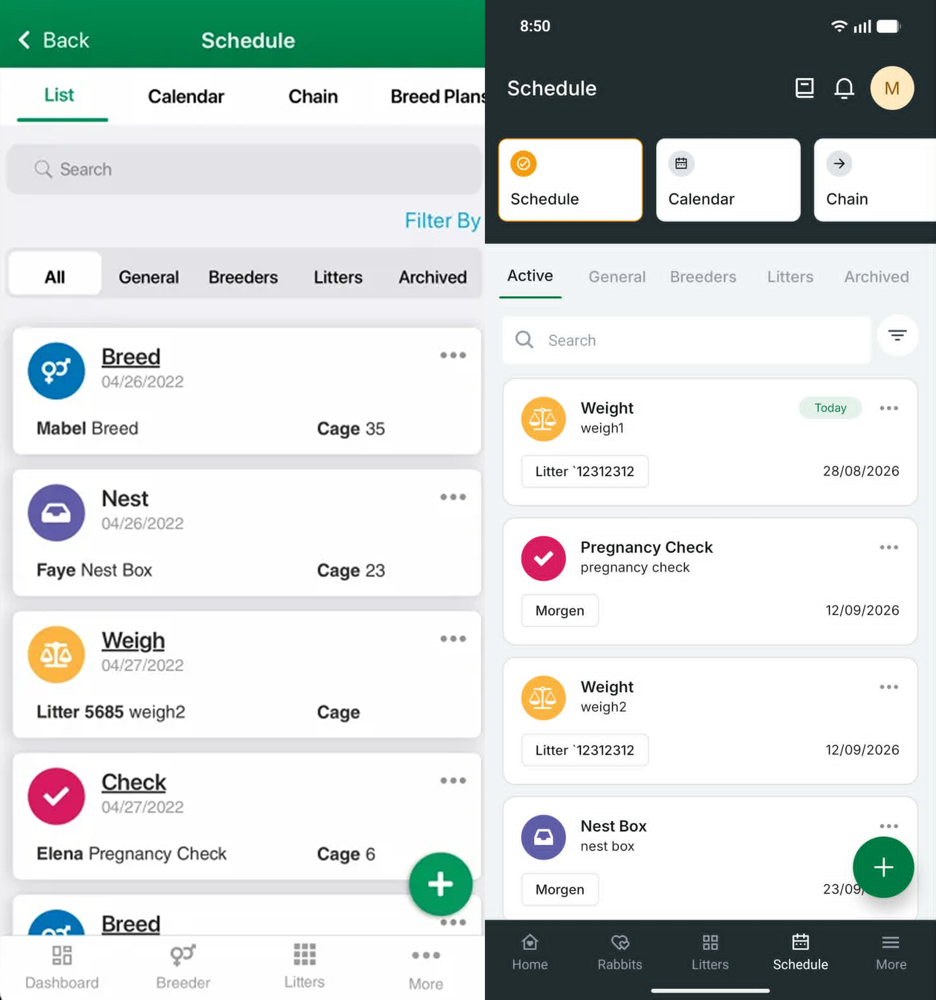

Product Direction
Defined the problems, priorities, and outcomes for the redesign.
A product-wide redesign to make Everbreed simpler, more actionable, and more consistent across web and mobile.
Context
Everbreed had grown significantly over the years, but the experience hadn't evolved with it. As more features were added, the product became increasingly dense, interactions became inconsistent, and important actions were harder to discover.
Customer feedback also described parts of the experience as dated and clunky. We saw modernization as an opportunity to improve the overall customer experience while preserving the workflows existing breeders already depended on.
Ownership and collaboration
I led the product side of the redesign alongside our Product Designer, translating customer needs and core breeder workflows into requirements and priorities. We facilitated workshops together, while I partnered with Design and Engineering through implementation, beta feedback, and rollout.
Defined the problems, priorities, and outcomes for the redesign.
Brought customer feedback and knowledge of core breeder workflows into product decisions.
Partnered with Product Design and Engineering from workshops and requirements through implementation, beta feedback, and rollout.
Product principles
Improve information hierarchy and reduce complexity across dense screens and workflows.
Make important actions and features easier to find and complete.
Modernize the interface while establishing consistent interaction patterns across Everbreed.
Product process
Customer feedback consistently described parts of Everbreed as dated or clunky, reinforcing the need to reconsider the core experience.
Worked with Product Design to map the workflows breeders depended on and facilitated workshops to identify where the experience could be simplified.
Translated those findings into product requirements and priorities while our Product Designer created the new experience and supporting design system.
Put the redesigned experience in front of real customers early and used their feedback to iterate before completing the migration.
Before and after
The dashboard comparison shows how the redesign changed both presentation and product behavior—not simply the visual style.

Mobile — Schedule

PassiveActionable
DenseStructured
InconsistentPredictable
Rollout & migration
A full product redesign can create friction for customers who have spent years learning the existing interface. Instead of forcing everyone onto the new experience immediately, we introduced it progressively and used customer feedback and adoption behavior to guide the migration.
Invited power users and early testers before the broader production release.
Recruited additional beta testers through newsletter email and in-app messaging.
Collected feedback, fixed usability issues, and restored functionality users identified as important to their day-to-day workflows.
Released the redesigned experience while keeping the Legacy Interface available so customers could transition at their own pace.
Tracked usage of the redesigned experience versus Legacy and retired the old interface once adoption showed that most users had successfully transitioned.
Results
Users who tried the redesigned experience after release
Interface usage that shifted from Legacy to the redesigned experience
Time before adoption gave us confidence to retire Legacy
“I LOVE the feel of the new version. I like that it shows that the does are bred and who they are bred to right on the tile.”
“It’s great, very efficient and easy to use.”
Beta feedback surfaced workflows and functionality that had been unintentionally deprioritized during the redesign. We used that feedback to restore important capabilities before releasing to all users.
{kind=link}